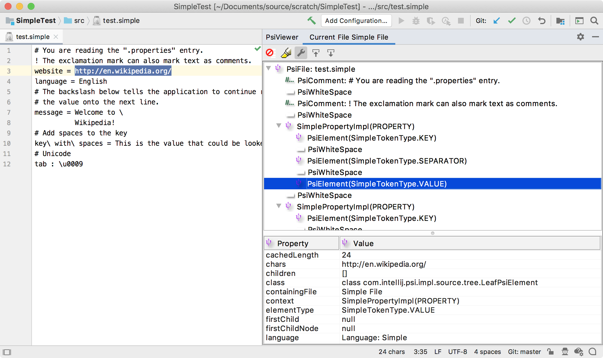

4. Lexer and Parser Definition
The lexical analyzer defines how the contents of a file are broken into tokens, which is the basis for supporting custom language features. The easiest way to create a lexer is to use JFlex
- 4.1. Define a Lexer
- 4.2. Generate a Lexer Class
- 4.3. Define a Lexer Adapter
- 4.4. Define a Root File
- 4.5. Define a Parser
- 4.6. Register the Parser Definition
- 4.7. Run the Project
4.1. Define a Lexer
Define a Simple.flex file with rules for the Simple Language lexer, as demonstrated in org.intellij.sdk.language.Simple.flex.
package org.intellij.sdk.language;
import com.intellij.lexer.FlexLexer;
import com.intellij.psi.tree.IElementType;
import org.intellij.sdk.language.psi.SimpleTypes;
import com.intellij.psi.TokenType;
%%
%class SimpleLexer
%implements FlexLexer
%unicode
%function advance
%type IElementType
%eof{ return;
%eof}
CRLF=\R
WHITE_SPACE=[\ \n\t\f]
FIRST_VALUE_CHARACTER=[^ \n\f\\] | "\\"{CRLF} | "\\".
VALUE_CHARACTER=[^\n\f\\] | "\\"{CRLF} | "\\".
END_OF_LINE_COMMENT=("#"|"!")[^\r\n]*
SEPARATOR=[:=]
KEY_CHARACTER=[^:=\ \n\t\f\\] | "\\ "
%state WAITING_VALUE
%%
<YYINITIAL> {END_OF_LINE_COMMENT} { yybegin(YYINITIAL); return SimpleTypes.COMMENT; }
<YYINITIAL> {KEY_CHARACTER}+ { yybegin(YYINITIAL); return SimpleTypes.KEY; }
<YYINITIAL> {SEPARATOR} { yybegin(WAITING_VALUE); return SimpleTypes.SEPARATOR; }
<WAITING_VALUE> {CRLF}({CRLF}|{WHITE_SPACE})+ { yybegin(YYINITIAL); return TokenType.WHITE_SPACE; }
<WAITING_VALUE> {WHITE_SPACE}+ { yybegin(WAITING_VALUE); return TokenType.WHITE_SPACE; }
<WAITING_VALUE> {FIRST_VALUE_CHARACTER}{VALUE_CHARACTER}* { yybegin(YYINITIAL); return SimpleTypes.VALUE; }
({CRLF}|{WHITE_SPACE})+ { yybegin(YYINITIAL); return TokenType.WHITE_SPACE; }
[^] { return TokenType.BAD_CHARACTER; }
4.2. Generate a Lexer Class
Now generate a lexer class via JFlex Generator from the context menu on Simple.flex file.
The Grammar-Kit plugin uses the JFlex lexer generation.
When running for the first time, JFlex prompts for a destination folder to download the JFlex library and skeleton.
Choose the project root directory, for example code_samples/simple_language_plugin.
After that, the IDE generates the lexer under the gen directory, for example in simple_language_plugin/src/main/gen/org/intellij/sdk/language/SimpleLexer.
See Implementing Lexer for more information about using JFlex with the IntelliJ Platform.
4.3. Define a Lexer Adapter
The JFlex lexer needs to be adapted to the IntelliJ Platform Lexer API.
This is done by subclassing FlexAdapter.
// Copyright 2000-2020 JetBrains s.r.o. and other contributors. Use of this source code is governed by the Apache 2.0 license that can be found in the LICENSE file.
package org.intellij.sdk.language;
import com.intellij.lexer.FlexAdapter;
import java.io.Reader;
public class SimpleLexerAdapter extends FlexAdapter {
public SimpleLexerAdapter() {
super(new SimpleLexer((Reader) null));
}
}
4.4. Define a Root File
The SimpleFile implementation is the top-level node of the tree of PsiElements for a Simple Language file.
// Copyright 2000-2020 JetBrains s.r.o. and other contributors. Use of this source code is governed by the Apache 2.0 license that can be found in the LICENSE file.
package org.intellij.sdk.language.psi;
import com.intellij.extapi.psi.PsiFileBase;
import com.intellij.openapi.fileTypes.FileType;
import com.intellij.psi.FileViewProvider;
import org.intellij.sdk.language.*;
import org.jetbrains.annotations.NotNull;
public class SimpleFile extends PsiFileBase {
public SimpleFile(@NotNull FileViewProvider viewProvider) {
super(viewProvider, SimpleLanguage.INSTANCE);
}
@NotNull
@Override
public FileType getFileType() {
return SimpleFileType.INSTANCE;
}
@Override
public String toString() {
return "Simple File";
}
}
4.5. Define a Parser
The Simple Language parser is defined by subclassing ParserDefinition.
// Copyright 2000-2020 JetBrains s.r.o. and other contributors. Use of this source code is governed by the Apache 2.0 license that can be found in the LICENSE file.
package org.intellij.sdk.language;
import com.intellij.lang.*;
import com.intellij.lexer.Lexer;
import com.intellij.openapi.project.Project;
import com.intellij.psi.*;
import com.intellij.psi.tree.*;
import org.intellij.sdk.language.parser.SimpleParser;
import org.intellij.sdk.language.psi.*;
import org.jetbrains.annotations.NotNull;
public class SimpleParserDefinition implements ParserDefinition {
public static final TokenSet WHITE_SPACES = TokenSet.create(TokenType.WHITE_SPACE);
public static final TokenSet COMMENTS = TokenSet.create(SimpleTypes.COMMENT);
public static final IFileElementType FILE = new IFileElementType(SimpleLanguage.INSTANCE);
@NotNull
@Override
public Lexer createLexer(Project project) {
return new SimpleLexerAdapter();
}
@NotNull
@Override
public TokenSet getWhitespaceTokens() {
return WHITE_SPACES;
}
@NotNull
@Override
public TokenSet getCommentTokens() {
return COMMENTS;
}
@NotNull
@Override
public TokenSet getStringLiteralElements() {
return TokenSet.EMPTY;
}
@NotNull
@Override
public PsiParser createParser(final Project project) {
return new SimpleParser();
}
@Override
public IFileElementType getFileNodeType() {
return FILE;
}
@Override
public PsiFile createFile(FileViewProvider viewProvider) {
return new SimpleFile(viewProvider);
}
@Override
public SpaceRequirements spaceExistenceTypeBetweenTokens(ASTNode left, ASTNode right) {
return SpaceRequirements.MAY;
}
@NotNull
@Override
public PsiElement createElement(ASTNode node) {
return SimpleTypes.Factory.createElement(node);
}
}
4.6. Register the Parser Definition
Registering the parser definition in the plugin.xml file makes it available to the IntelliJ Platform.
Use the com.intellij.lang.parserDefinition extension point for registration.
For example, see simple_language_plugin/src/main/resources/META-INF/plugin.xml.
<extensions defaultExtensionNs="com.intellij">
<lang.parserDefinition language="Simple"
implementationClass="org.intellij.sdk.language.SimpleParserDefinition"/>
</extensions>
4.7. Run the Project
With the simple_language_plugin loaded in a Development Instance, create a test.simple properties file with the following content:
# You are reading the ".properties" entry.
! The exclamation mark can also mark text as comments.
website = http://en.wikipedia.org/
language = English
# The backslash below tells the application to continue reading
# the value onto the next line.
message = Welcome to \
Wikipedia!
# Add spaces to the key
key\ with\ spaces = This is the value that could be looked up with the key "key with spaces".
# Unicode
tab : \u0009
Now open the PsiViewer tool window and check how the lexer breaks the content of the file into tokens, and the parser parsed the tokens into PSI elements.
